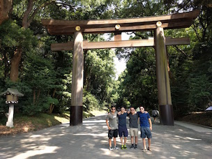
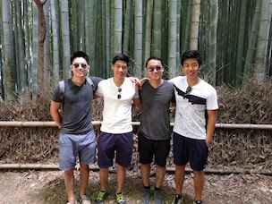
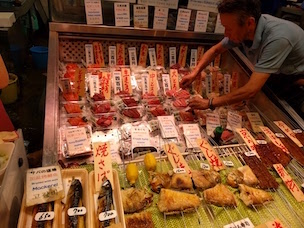
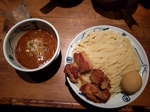

I am a current second-year majoring in Computer Science at the Massachusetts Institute of Technology, hoping to graduate by '18 with a B.S. in both Computer Science and Mathematics. I was a software engineer intern at Bloomberg during the summer of '16 and a trader intern at Five Rings Capital during winter '17. Now, I'm an incoming software engineer intern at Two Sigma Investments during summer '17.
As of now, I've dabbled as a researcher, taught students to excel in problem solving, and exposed myself to finance as a software engineer, but I'm always seeking new opportunities-- contact me for anything!
I have experience working in C++, Python, and Java from both industry experience and the classroom. I've taken classes in both operating systems and machine learning, while developing an interest in potentially doing my Masters of Engineering in artificial intelligence. A list of my current course experience can be found here.
I participated in many math contests in high school, having traveled to Boston, Pasadena, Princeton, and Kansas City to partake in off-site contests. My achievements including qualifying for the USA Mathematical Olympiad and winning the 2013 Caltech Harvey-Mudd Math Competition. I am still involved with math contests to this day, volunteering numerous times and being a previous Guts Round Director for the Harvard-MIT Math Tournament.
Additionally, I have experience working with students. I trained students to excel in math competitions as an instructor for the StarLeague program throughout high school, gaining valuable speaking and lecturing experience as a result. At the 2013 StarLeague Winter Camp, I was given a best instructor award.
I've attempted (however poorly!) many activities as a kid, including swimming, tennis, taekwondo, and drawing.
One of my primary interests remain within music. I've been blessed with perfect pitch, and I've also won numerous awards from the US Open Music Competition in the past along with completing the Certificate of Merit, Level 10 program for piano in middle school. If I had not discovered math contests, I would have most likely become a musician!
In stark contrast with the arts, I also love playing Texas Hold'em. I am a member of the MIT Poker Club, and I also play $1/$2 No-Limit Texas Hold'em occasionally.
I also love to travel! I plan to travel to Calgary, Canada during summer '17, and I also plan on making a tour around Korea and Southeast Asia during winter '17.
In the past, I've traveled to Mexico, Canada, France, England, Scotland, Belgium, Italy, Switzerland, China, Taiwan, and most recently, Japan. Here are some pictures from my most recent trip!
|
 Many temple entrances include grand arches-- this particular arch was at the famous Meiji Jingu Temple in Shibuya, Tokyo. |
Japan is known for its traditional Shinto shrines. Kyoto, especially, is home to many historical shrines with cultural significance. |
 In Kyoto, there is a narrow path surrounded by thick bamboos on both sides, making the tourist-friendly trail intensely captivating. |
|---|---|---|
|
 There are many street markets in Japan selling delicacies. This particular stand sold fresh sashimi at insanely low prices! |
 Udon is a dish in Japan served with noodles on the side and a dipping broth. This udon was found in a famous food district in Kyoto. |
Ramen is refined as an highly coveted art in Japan, with each broth unique in flavor and thickness depending on the store. |